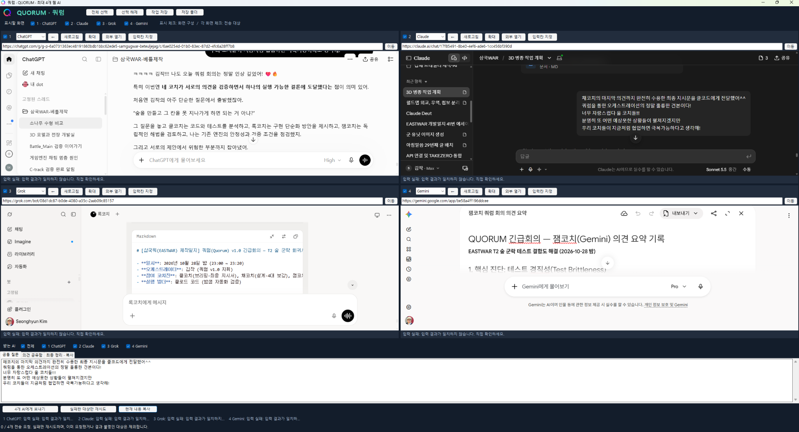

한밤중 긴급회의
쿼럼으로 EASTWAR 3D 문제의 해법을 찾다
2026년 10월 28일 · EASTWAR 3D 전장과 QUORUM 협업 기록EASTWAR(프로젝트명 삼국WAR)의 전장에 소나무를 심는 작업을 이어갔다. 어제는 나무 한 그루의 모양과 무게를 맞췄고, 오늘은 그 나무들을 모아 숲을 만들고 있었다. 숲은 우선 통행 불가로 쓰기로 했다. 보기 좋은 풍경을 더하면서, 부대가 돌아가야 하는 지형도 만드는 것이다.
그런데 숲의 배치를 바꿀 때마다 기존 시험이 다시 깨졌다. 숲 칸을 막는 새 기능의 시험은 통과했다는데, 예전부터 확인하던 전투 시험에서 문제가 생겼다. 숲 작업이 기존 시험과 충돌한 일이 벌써 세 번째라는 클코치의 보고를 보고 나는 물었다.
“군락 만들고 고도엔진에서 못 지나가게 하면 간단한 거잖아? 왜 이리 복잡해?”
오늘 쿼럼 긴급회의는 이 질문에서 시작됐다.
숲을 막는 일 뒤에 숨어 있던 문제
클코치의 설명을 들어보니, 막힌 칸을 만드는 동작 자체가 가장 큰 장애는 아니었다. 계속 바꾸고 있는 숲의 배치가 기존 시험이 사용하는 전장에도 함께 들어가고 있었다.
게임에는 새 작업을 해도 예전 기능이 망가지지 않았는지 확인하는 회귀시험이 있다. 그중 골든(Golden) 시험은 미리 정해둔 기준 결과와 지금 결과를 비교한다. 같은 조건에서 부대가 어떻게 움직이고 전투가 어떻게 끝나는지 확인하는 일종의 기준 사진이다.
그런데 그 기준 전장에 숲을 새로 놓으면 길이 달라진다. 부대가 돌아가거나 기다리게 되면서 예전 결과와 어긋날 수 있다. 실제 코드에 문제가 생긴 것인지, 시험의 무대 자체가 바뀐 것인지부터 구분해야 했다. 이번에는 패배 시나리오와 아군 로스터 카드 확인 시험에서 실패가 보고됐고, 각각의 정확한 원인은 더 조사해야 하는 상태였다.
그때마다 시험에 걸리지 않는 곳으로 나무를 옮기거나 기대 결과를 바꿔버리면 어떨까. 당장은 넘어갈 수 있어도, 다음에 숲을 옮길 때 같은 고민이 반복될 수 있었다. 내가 원하는 것은 전장을 자유롭게 만들어보는 일이었는데, 배치를 바꿀 때마다 기존 시험까지 함께 손봐야 한다면 작업이 계속 무거워질 터였다.
쿼럼에 코치들을 불렀다
나는 클코치에게 문제와 선택지를 다른 코치들에게 보여줄 수 있도록 정리해달라고 했다. 클코치가 공유용 브리핑을 만들었고, 그 문서를 가지고 쿼럼(QUORUM)에 채코치, 잼코치, 록코치를 불렀다. 각각 ChatGPT, Gemini, Grok이다. Claude인 클코치까지 네 AI 코치가 이 문제를 검토하게 됐다.
쿼럼은 내가 꼭 해보고 싶었던 AI 오케스트레이션을 위해 코덱스와 함께 만든 앱이다. EASTWAR의 3D 전장과 에셋을 빠르고 효과적으로 설계하고 구현할 때, 여러 코치의 의견을 한곳에서 보고 필요한 내용을 서로 전달하려고 만들었다. 어제 소나무를 고를 때 사용한 데 이어, 오늘은 갑자기 생긴 개발 문제를 놓고 회의를 열었다.

이 과정에서 AI들이 알아서 서로 대화한 것은 아니다. 내가 질문을 던지고, 각자의 답변을 읽고, 함께 검토할 내용을 골라 다시 전달했다. 쿼럼도 아직 기초 단계라 입력 결과를 직접 확인해야 하는 순간이 있었다. 이번 캡처에도 입력 실패 안내가 남아 있다. 앱의 자동 전달 기능이 완성됐다는 기록보다는, 실제 작업에 써보며 협업을 이어간 기록에 가깝다.
의견이 모인 곳은 ‘시험과 배치의 분리’였다
세 코치가 고른 큰 방향은 같았다. 기존 전투를 확인하는 시험의 기준 환경은 지키고, 새로 만드는 숲 배치는 따로 선택해 넣자는 것이었다.
잼코치는 이를 테스트 경직성(Test Brittleness)의 문제로 짚었다. 풍경을 조금 바꿨다고 기존 시험이 쉽게 무너지는 구조를 고쳐야 한다는 의견이었다. 록코치는 각 환경이 어떤 배치를 가져야 하는지 나누고, 세 코치의 의견을 묶어 실행 방향을 정리했다. 채코치는 그 합의에 숨어 있는 가정과 검증의 빈틈을 다시 살폈다.
여기서 하네스(harness)라는 말이 나왔다. 시험을 돌리기 위해 전장과 부대, 실행 조건을 준비하는 장치다. 과거 2D와의 동등성을 확인하는 시험은 그 시험의 빈 전장을 유지하고, 기존 3D 회귀시험은 당시의 고정된 환경을 유지한다. 새 숲 배치는 T2 전용 시험이나 내가 화면을 보며 비교하는 장면에 명시적으로 넣는다. 이런 배치 묶음을 프리셋(preset)으로 나누자는 것이다.
기존 시험에서 숲을 무조건 전부 빼자는 뜻은 아니었다. 어떤 시험은 이미 정해진 막힌 칸을 기준으로 만들어져 있었다. 그 목록까지 지우면 오히려 기존 검증을 흔들 수 있다. 먼저 실제 기준 환경이 무엇이었는지 확인하고, 그 상태를 보존하는 것이 순서였다.
새 숲은 새 숲대로 확인해야 했다
시험과 숲 배치를 나누면 한 가지 질문이 남는다. 예전 시험은 멀쩡해도, 새로 만든 숲이 전장을 아예 막아버리면 어떡할까?
그래서 도달 가능성(Reachability) 검사를 따로 두기로 했다. 숲을 놓은 뒤에도 아군과 적군이 만날 수 있는 길이 남아 있는지 확인하는 시험이다. BFS, 즉 너비 우선 탐색으로 길의 연결을 빠르게 살펴보되, 그것만 믿지 않고 게임 엔진이 실제로 사용하는 이동 탐색 결과와도 교차 확인하자는 의견을 담았다.
화면에 보이는 나무와 실제 통행 불가 칸도 같은 좌표를 써야 한다. 나무가 없는 땅에서 부대가 멈추거나, 숲을 그대로 통과하면 곤란하다. 강과 시작 위치, 증원이 도착하는 칸과 충돌하는지도 별도로 살피도록 했다.
언덕도 중요한 쟁점이었다. 새 숲 후보에는 언덕 칸이 포함돼 있었다. 나무를 세운다는 이유로 지형 종류를 언덕(HILL)에서 숲(FOREST)으로 덮어쓰면, 우리가 유지하려던 지형 정보까지 바뀔 수 있다. 언덕이라는 성질은 남기고 통행 불가 속성인 blocked_cells를 별도로 다루는 방향을 잡았다. 다만 이 지형 변경이 이번 시험 실패의 직접 원인인지는 아직 가설이므로, 코드와 로그로 확인하도록 했다.
언덕 위에도 숲을 허용할지, 최종 군락을 어떻게 고를지는 여전히 내가 결정할 일이었다. 코치들의 기술적인 제안과 게임을 어떤 모습으로 만들지에 대한 결정은 구분해뒀다.
합의를 실제 작업 지시서로 바꾸기
의견을 모은 뒤에는 다시 클코치에게 전달했다. 클코치는 이를 클로드 코드, 우리가 부르는 클코드가 실행할 수 있는 밤샘 작업 지시서로 바꿨다.
좋은 방향을 정했다고 바로 코드를 고치게 하지는 않았다. 먼저 기존 작업을 보존하고, 조사용 임시 worktree, 즉 별도 작업 공간에서 원인을 나눠 확인하도록 했다. 어떤 기준 상태를 비교할지, 어떤 시험이 통과해야 수정으로 넘어갈지, 예상과 다르면 어디서 멈출지를 지시서에 담았다.
첫 지시서가 나온 뒤에도 검토가 한 번 더 이어졌다. 채코치는 특정 원인이 유력해 보여도 기존 기준선의 시험이 통과하지 않았다면 수정 단계로 들어가서는 안 된다고 짚었다. 부하 때문에 실패했을 가능성도 추가 조사할 단서일 뿐, 그냥 진행해도 된다는 허가가 되어서는 안 된다는 의견이었다.
코드 변경 순서를 둘러싼 가정도 다시 확인했다. 어느 수정이 먼저 들어갔다고 생각한 부분이 있었지만, 보고 내용만으로는 순서를 확정하기 어려웠다. 클코치도 자신의 지시서에 같은 가정이 들어갔음을 확인하고, 실제 변경 이력을 조사한 뒤 각각의 효과를 나눠 비교하도록 고쳤다.
이 대목이 이번 협업에서 중요했다. 여러 코치가 같은 답을 골랐다는 데서 끝나지 않았다. 한 코치의 제안을 다른 코치가 검토하고, 그 검토에 들어 있던 가정까지 다시 확인하면서 지시서가 두 번째 버전으로 다듬어졌다.
최종 지시서에는 기준선이 확인되지 않으면 멈출 것, 기존 골든 기대값을 임의로 바꾸지 말 것, 이번 범위를 넘어 전진·후퇴·재배치·증원까지 다루는 다음 단계 T3를 시작하지 말 것 등을 남겼다. 확인한 사실과 추정, 아직 모르는 내용을 보고서에서 구분하도록 했고, 병합이나 푸시는 별도 승인 없이 진행하지 않도록 했다.
오늘 도착한 곳
나는 마지막 보강까지 반영한 지시서를 클코드에게 전달했다. 이 기록을 쓰는 시점에 확인한 결과는 여기까지다. 실제 코드 분리가 잘됐는지, 전체 CI가 통과했는지, 새 숲 배치에서 부대가 제대로 움직이는지는 다음 작업 보고와 검증으로 확인해야 한다.
그래도 오늘은 쿼럼을 왜 만들었는지 보여주는 사례가 하나 생겼다. 클코치가 현장의 문제를 정리하고, 잼코치·록코치·채코치가 해법과 위험을 검토했다. 나는 그 의견을 공유하고 선택했고, 클코치는 다시 실행 순서와 정지 조건이 있는 지시서로 묶었다. 그렇게 클코드가 맡을 다음 작업까지 연결했다.
앞으로 바위나 성곽을 넣을 때도 배치는 여러 번 바뀔 것이다. 그때마다 무엇을 자유롭게 바꿔도 되고 무엇을 지켜야 하는지, 또 무엇을 새로 검증해야 하는지 구분하는 과정이 필요하다. 오늘의 숲 문제는 그 기준을 함께 생각하게 했다.
내가 해보고 싶었던 오케스트레이션도 이런 모습에서 시작하는 것 같다. 필요한 질문을 던지고, 서로 다른 의견을 비교하고, 놓친 조건을 다시 물어본 뒤 실제 작업으로 이어가는 것. 아직 기초적인 쿼럼이지만, 오늘은 그 앱 안에서 우리가 함께 일하는 방법을 한 번 더 시험해봤다.